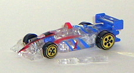
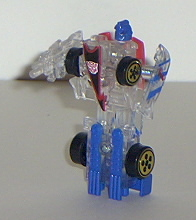
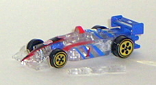
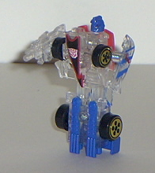
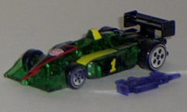
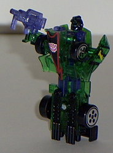

 
Size : Spychanger (comes packaged individually)
Color Scheme : Clear plastic, dark blue, black, bright red, and some white, dark red, and chrome gold
Rating : 4.4
Mirage's vehicle mode
is a Forumla One race car. Mirage's vehicle mode is very nice, and about
Hot Wheels-sized, wiht no extras whatsoever. Unfortunately, like the other
Wave 1 Spychangers, Mirage's robot mode gun cannot be stored in this mode,
which really ticks me off. I hate having to find another container for
weapons that could easily be stored in their Transformers' alt modes. Still,
that small downside aside, this is really a nice alt mode- the blue stripes
fit really nicely with the reds and whites of this mode. Mirage's "tail
fender" has the words "TM TRANSFORMERS" on it, which is a nice touch (although
they could have done without the TM).
Mirage's transformation
is the same as the other Wave 1 Spychangers- seperate the two race car
halves slightly to reveal the upper leg extensions, pull the robot arms
out, flip the hood down to reveal the robot head, and you're done. I've
never liked the Spychanger's robot modes, and Mirage definitely fits inside
this category. His chest sticks out way too much for my liking (although
it's at least not as bulky as some of the other Spychanger's fronts), and
his legs are one big piece with no articulation. This definitely limits
playability. In fact, the only movable parts in this mode are his arms,
at one point- oddly, the elbow, which is where they are attached to the
main body. It looks very weird, having Mirage pivot his arms at the elbows,
and it's definitely not a plus. The color combo is still alright, but it's
not near enough to save the toy.
A pretty good vehicle
mode, but a pretty bad robot mode. A bit on the "less attractive" side
of the Spychangers, mostly because of the oddly-shaped race car chest and
the arms pivoted at the elbows. You're better off getting something else,
unless you're a completist.
 Mirage
(2002 Version; Spychanger, Transparent) (KB Toys Exclusive)
Mirage
(2002 Version; Spychanger, Transparent) (KB Toys Exclusive)


Size
: Spychanger (comes packaged
individually)
Color Scheme
: Clear plastic, dark
blue, black, bright red, and some white, dark red, and chrome gold
Rating
: 4.4
To everyone's surprise, a KB Toys Exclusive, transparent version of the Spychanger Mirage came out in summer 2002, packaged individually (and with tech specs on the back this time). However, this version of Mirage really isn't that different from the previous one- all of the off-white and white has been replaced by clear plastic, and that's it. Nothing else has been changed. As such, he's rather plain compared to the other Transparent Spychangers, although I still think the see-through effect is a bit cool. Still, if you have the original version, I wouldn't recommend this one unless you're an absolute completist.
 Mirage
(2003 Version; Spychanger, Transparent) [KB Toys Exclusive]
Mirage
(2003 Version; Spychanger, Transparent) [KB Toys Exclusive]


Size
: Spychanger (comes packaged
individually)
Color Scheme
: Transparent green,
transparent blue, black, and some yellow, chrome silver, and dark red
Rating
: 4.9
This version of Mirage
is a pretty nice improvement, in my opinion. Now Mirage has a very dark-looking
green, black, yellow, and blue color scheme, and most of it's transparent.
It all meshes together VERY nicely, leaving no complaints about him in
that area. The yellow fade on the roof is especially eye-catching. The
only paint app missing is the "Transformers" logo on his tail fin, but
I was never too fond of that anyway, so I don't consider it a loss.
A very nice color scheme
choice, Mirage is probably the only 2003 version Spychanger that I'd consider
an improvement over the 2002 version.
Review by Beastbot